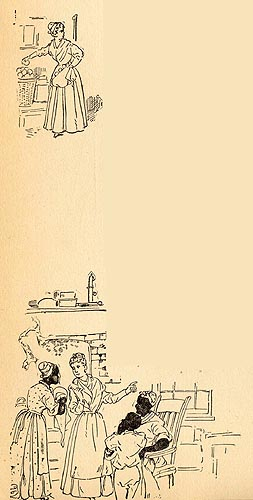

|
 When Percy Driscoll dies, his will sets Roxy free, and she leaves Dawson's Landing to work as a chambermaid on a steamboat, planning never to return. But when rheumatism incapacitates her and her savings are lost by a bank failure, she "resolves to go to her birthplace," where her "friends among the negroes" will make sure she doesn't starve. In the illustrations here we see her "pilfer[ing]" food for herself, and telling her adventures on the river to the slaves in Judge Driscoll's kitchen, to whom she is "a heroine of romance." "The negroes hung enchanted upon the great story of her experiences, interrupting her all along with eager questions, with laughter, with exclamations of delight and expressions of applause; and she was obliged to confess to herself that if there was anything better in this world than steamboating, it was the glory to be got by telling about it." The Barrett Collection, UVA PS 1317 .A1 1894 |